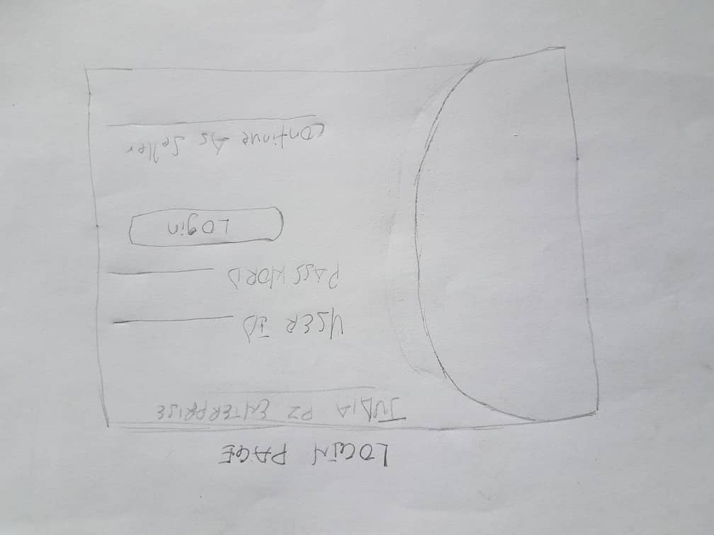
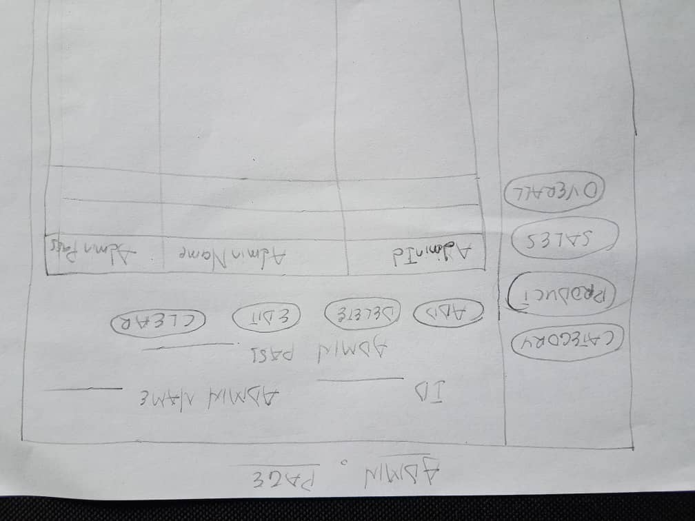
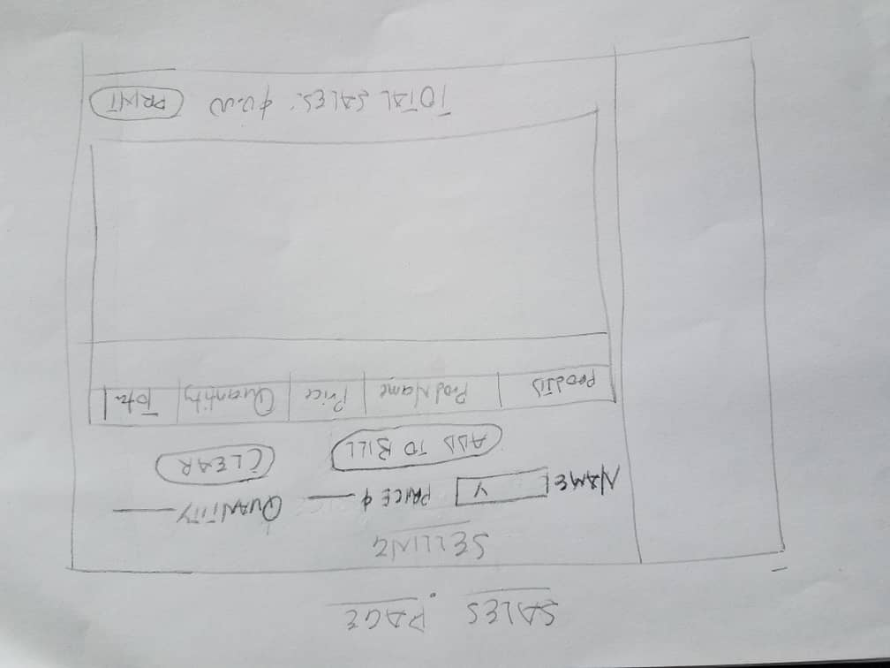
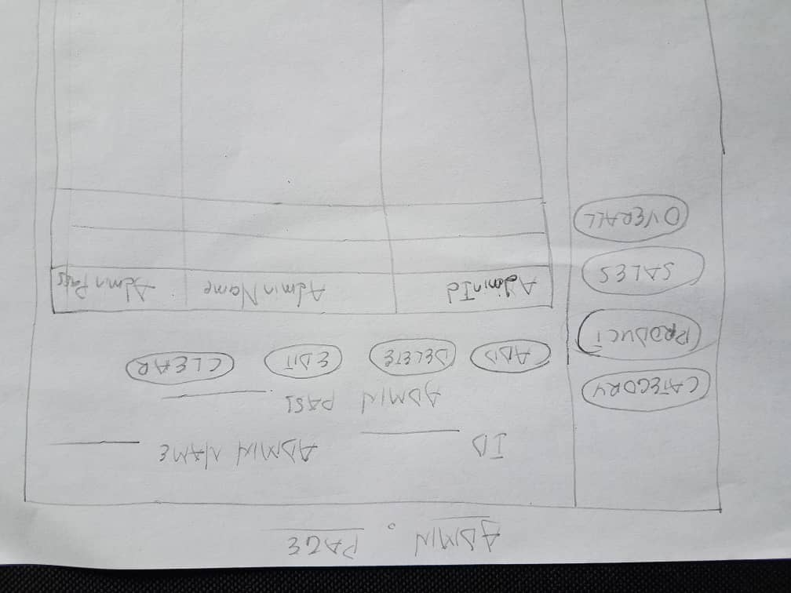
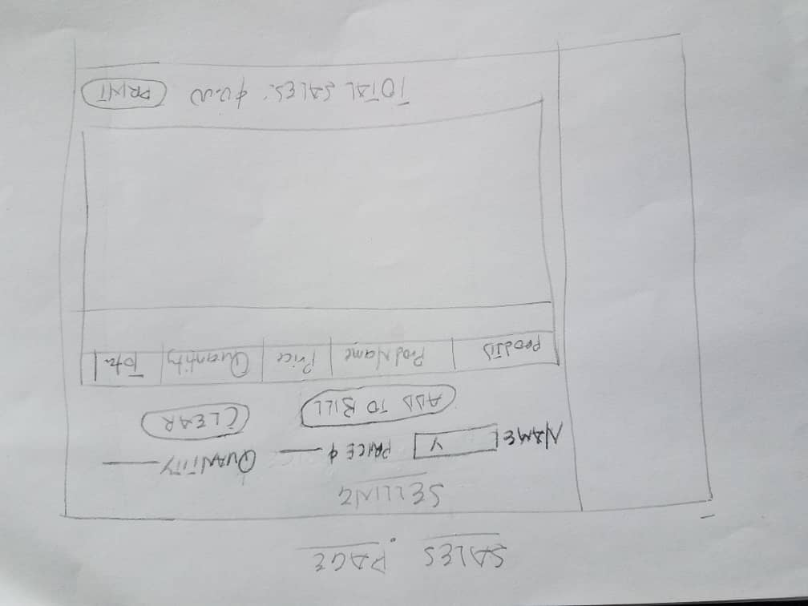
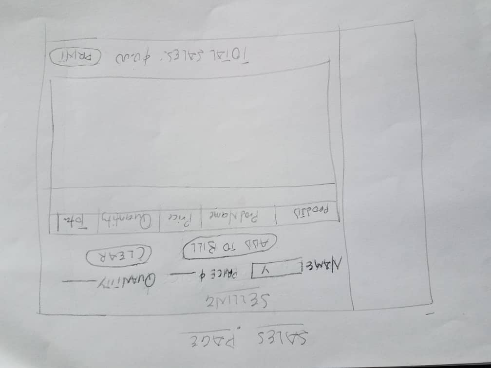

HUMAN COMPUTER INTERACTION PROJECT WORK
GR2 DESIGNS
GROUP MEMBERS
NAMES..................INDEXNUMBERS
- KWABENA OWUSU-OWARE: 040918151
- AKAKPO KWASHIE MAWULI: 040918133
- VICTOR AKO ADDO: 040918063


SCENARIO
This point-of-sale system was created to address real-world issues such as maintaining financial records, as well as keeping track of daily, weekly, monthly, and yearly activities. This helps to understand how the firm is expanding, as well as the business's weaknesses and how to address them. In a situation where akosua known as the customer comes to buy product from the shop, akosua the shop owner kwesi should be the one selling the item to akosua but in this case kwesi is not available therefore he has to hire selorm an employee to sell his products when he is not available. Now how would kwesi know that selorm is not stealing from his shops or selling products at their wrong prices.The Point of sale system will be the solution to keep watch on selorm to sell and make accounts of what he sold whenever kwesi is away.
Business Idea: Buying and selling of provisions
Name of the Store: Judia PZ Provision Store
This Provision Store want to keep track of thier sales and keep customers records and also to have branches where business operation can be successful. The system will have eight interfaces and with the eight(8th) interface will have three sub interfaces. The interfaces are; Login, sales, User management page,Categories page, Products page, Accounts page Sales page and The management page will be connected to all pages and the sales page will have one sub page known as the print page.
Learnability
Learnability is a trait or capability of a product or interface that enables users to quickly become familiar with it and fully utilize its features and capabilities.
Because the user understands how to interact with the system right away, a user-friendly interface or product is sometimes referred to as intuitive.
In relating to this system (point-of-sale system), The user interfaces are created in such a way that they are flexible, usable, and simple to comprehend.
Because the end users were included in the creation of this system, it is simple to grasp. This is not just a developer's assumption; any good system produced by a developer that includes the end users is a good system.
And the system's failure rate is quite low.
Visibility
The basic notion behind visibility is that the more visible a feature is, the more likely it is that users will notice it and understand how to utilize it.
It's also important to remember that it's difficult to detect and use anything that's out of sight.
Despite how simple this concept is, designers continue to struggle with putting it into practice.
In relating to this system Judia PZ (point-of-sale system) , every component was made visible to the end user because the end user was involved, and to avoid stressing the end user who may not be familiar with the system, every component that is needed and usable was made available on the system.
Efficiency or Usability
In HCI or Usability terminology, efficiency is defined as the user's resources expended in relation to the correctness and completeness of goals attained.
According to the ISO standard, high efficiency is attained when the user achieves his or her objectives while using the fewest resources possible.
However, this definition is rather business-oriented, and it only partially applies to software like games or similar.
In relating to this system (point-of-sale system),the system is designed to meet every criteria of the end users, be it usability or efficiency
Error Prevention
It's preferable to design user interfaces that avoid making mistakes in the first place. Improve data quality to reduce the number of errors. Be on the lookout for typical user errors. A usual or recommended range of data, for example, should be shown by default or easily accessible by users if appropriate. .
Handy Sketch of the System
LOGIN PAGE

To gain access to a protected website or form, a login form is used to provide authentication credentials.
On the login form, there is a place for the username and another for the password.
When a user submits a login form, the underlying code validates that the credentials are valid, providing the user access to the restricted page.
Because not everyone is supposed to have access to the system, the system begins with Authentication.
Managers and employees are the end users.
THE ADMIN PAGE

The admninistrator page also known as the dashboard is a graphical representation of the key performance indicators (KPIs) or metrics that impact whether your digital marketing plan's objectives are accomplished.
The business dashboard also functions as an information management tool, allowing us to examine data and spot potential issues before taking action.
A dashboard is a visual representation of the most important data in the Marketing department.
This system's dashboard provides a quick overview of the entire system.
It also assists the end user in finding the session they are looking for.
SALES PAGE

PThe data you collect from your point of sale systems is used to generate point of sale (POS) reports.
Data and activities from the register are tracked at a point of sale terminal, which retains information that may be analyzed via POS reports.
This POS analysis can assist retailers with revenue tracking.
To gain access to a protected website or form, a login form is used to provide authentication credentials. On the login form, there is a place for the username and another for the password. When a user submits a login form, the underlying code validates that the credentials are valid, providing the user access to the restricted page. Because not everyone is supposed to have access to the system, the system begins with Authentication. Managers and employees are the end users.
THE ADMIN PAGE

The admninistrator page also known as the dashboard is a graphical representation of the key performance indicators (KPIs) or metrics that impact whether your digital marketing plan's objectives are accomplished.
The business dashboard also functions as an information management tool, allowing us to examine data and spot potential issues before taking action.
A dashboard is a visual representation of the most important data in the Marketing department.
This system's dashboard provides a quick overview of the entire system.
It also assists the end user in finding the session they are looking for.
SALES PAGE

PThe data you collect from your point of sale systems is used to generate point of sale (POS) reports.
Data and activities from the register are tracked at a point of sale terminal, which retains information that may be analyzed via POS reports.
This POS analysis can assist retailers with revenue tracking.
The admninistrator page also known as the dashboard is a graphical representation of the key performance indicators (KPIs) or metrics that impact whether your digital marketing plan's objectives are accomplished.
The business dashboard also functions as an information management tool, allowing us to examine data and spot potential issues before taking action.
A dashboard is a visual representation of the most important data in the Marketing department.
This system's dashboard provides a quick overview of the entire system.
It also assists the end user in finding the session they are looking for.
SALES PAGE

PThe data you collect from your point of sale systems is used to generate point of sale (POS) reports.
Data and activities from the register are tracked at a point of sale terminal, which retains information that may be analyzed via POS reports.
This POS analysis can assist retailers with revenue tracking.
PThe data you collect from your point of sale systems is used to generate point of sale (POS) reports. Data and activities from the register are tracked at a point of sale terminal, which retains information that may be analyzed via POS reports. This POS analysis can assist retailers with revenue tracking.